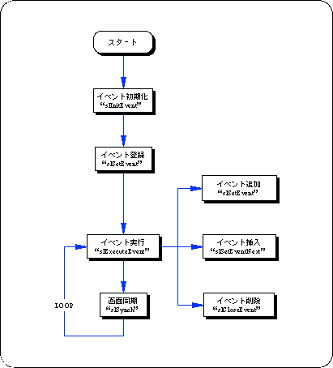

Return to previous page | Return to menu | Go to next page
The following flowchart shows a rough flow of event processing. In event processing, the user area is further expanded as necessary within the event to be executed, and a variable is used using a structure.
